k-Day 072｜已經不是戈壁了
早上七點起床，氣溫顯示3度，窗外還在飄雨，不急著出門。收拾好裝備，泡了咖啡，拿出昨天買的飯卷和蘿蔔汁躺在床上啃食。只要在一個地方多停留一天，出發時心裡就會產生阻力。
八點半牽車出門，幫後輪補一點氣，出發前再繞到CU買些零食。
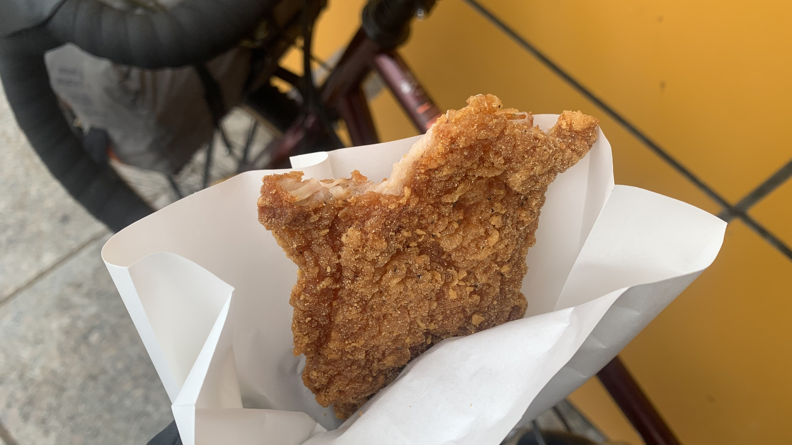
突然懷念起在日本超商門口啃雞塊的時光，於是買了一塊在門口吃了起來。
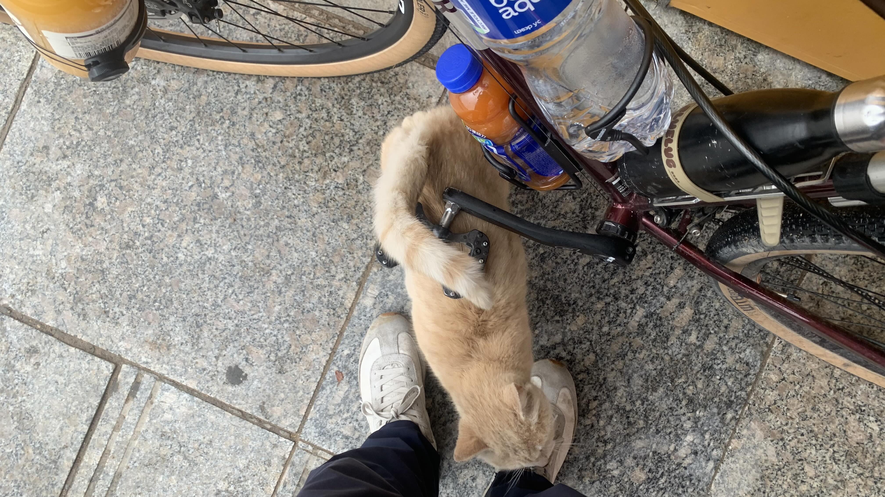
在冷風中吃著炸雞，感覺小腿附近有溫暖的生物移動，原來是隻小貓。撕了兩條雞肉條分給他吃。
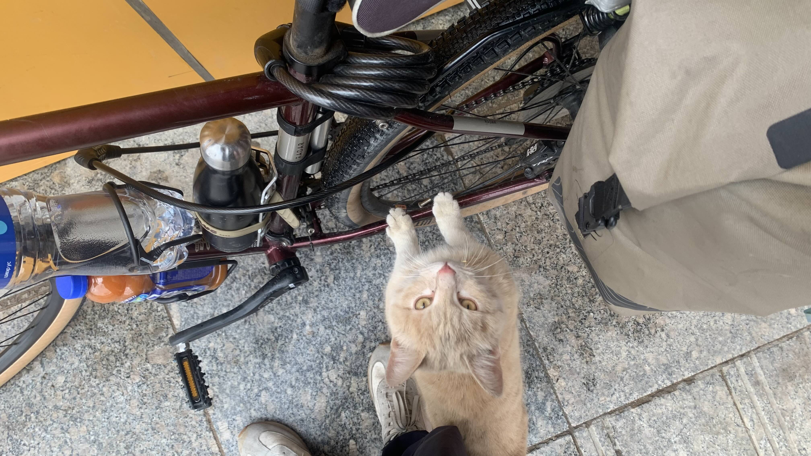
沒想到他吃完後過於激動，一直想攀上二十三號。這張照片的下一秒，他的兩隻前爪硬生生插進後輪。
兩口塞下所有的雞肉，匆匆離開現場。貓這樣的生物，就算抓爛外胎也無法對他生氣。
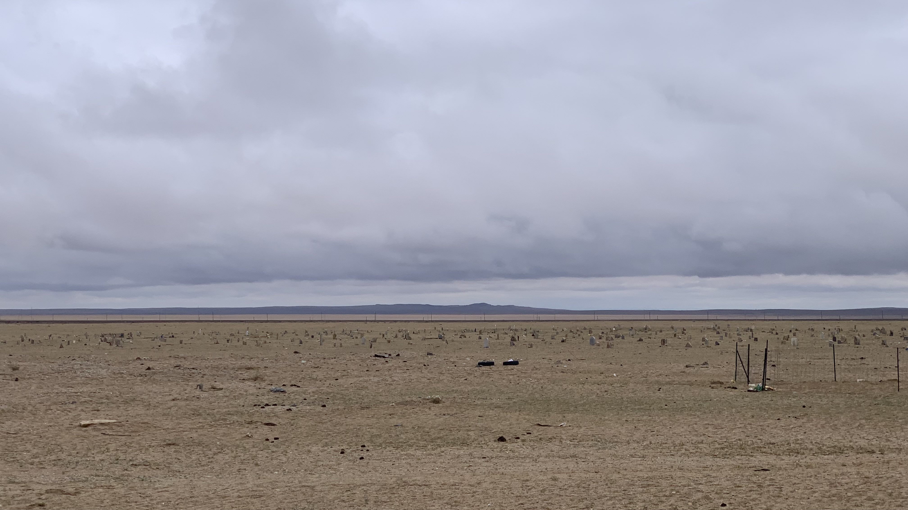
出發不久看到草原上有一圈石陣，看起來像墓碑又不確定是不是。
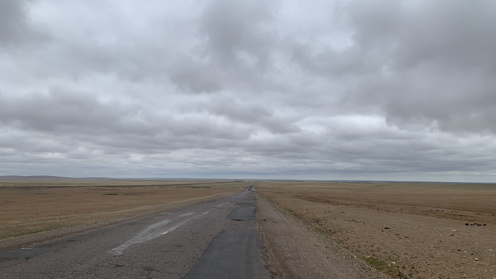
氣溫還是只有五度，天上的雲往東北方移動。照理說少了逆風不該這麼累，除了路面坑坑巴巴沒辦法全速前進外，為什麼一直有種拖沓感？
低頭一看後輪正逐漸軟塌，接觸地面的黃邊像柿子一樣，每滾一圈就擠壓一次。
真的不想在冷風中換胎，硬是往前騎，直到輪框幾乎要觸碰地面，才停下來打氣。
就這麼撐了二十公里左右，再騎下去輪胎會壞掉的，於是下來推車。因為少了運動，身體馬上發冷，風一吹就發抖。
沒多久就看到路旁有些低矮的建築和蒙古包。轉向離我最近的加油站。讓車橫躺在空地斜坡，拆下後輪，準備開始換胎。
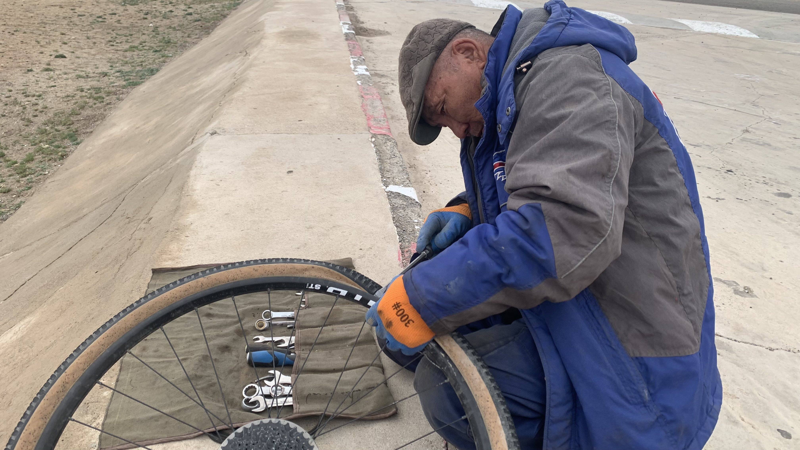
加油站停著一輛油車，站在車上的大叔一開始用觀察的眼神看著我把車牽到空地，等到把輪框拆下來，他馬上出現在旁邊，笑著說：「車子壞了嗎？」其實聽不懂這句話，不過這樣的場景不太可能是問我吃飽了沒。
話一說完大叔立刻接手輪胎，並主動和我要了挖胎棒和內胎、打氣筒等工具。挖胎棒太小隻不好使，大叔回車上拿來了整套修車工具，試了一下發現自行車不合用，又用回原本的挖胎棒。三兩下換好輪胎，和我確認這樣沒問題了，將工具交還給我後又立刻離開。依然連說謝謝的時間都不給。
因為大叔靠近和離開時都是笑笑的，應該不是嫌麻煩才立刻離開。至此也許可以確認之前提供幫助的人純粹只是不覺得需要在某些時刻報以微笑。
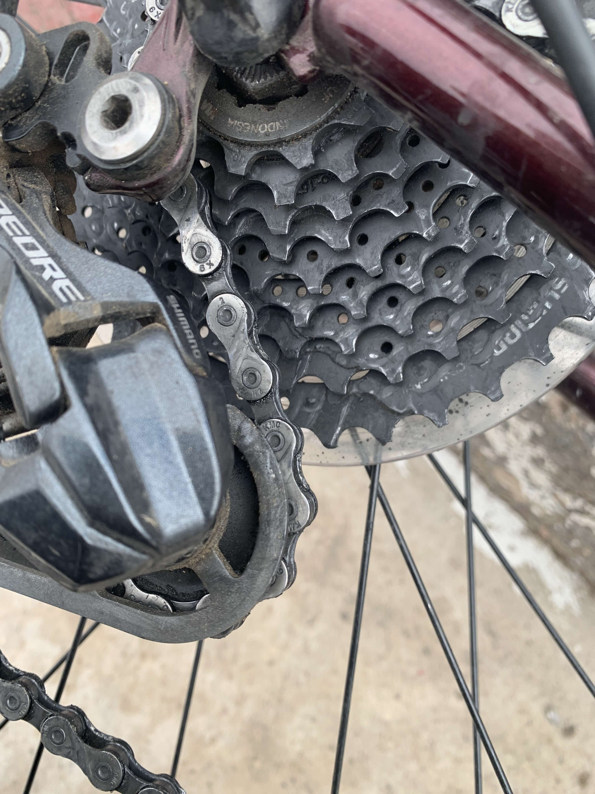
太久沒裝後輪，安裝時似乎撞到變速器，轉動鏈條時發出巨大的金屬摩擦聲。
爆胎過於頻繁，抱持著破罐子破摔的心態，決定就這樣騎進烏蘭巴托。
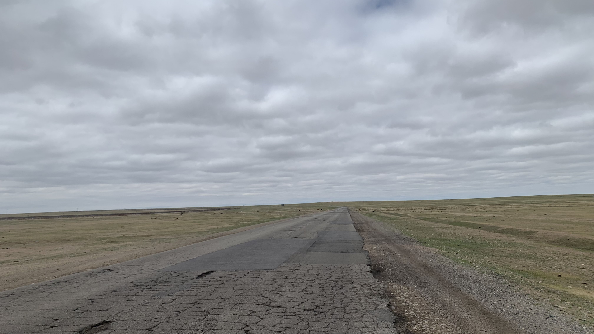
老實說還是提不起勁，前後輪交替爆得太頻繁，天色陰暗濕冷，這就是大家說的草原嗎？佈滿坑洞的路面，越來越多人造垃圾，比起這種景象，戈壁乾燥透明的空氣更令人喜愛。腦中充斥著負面的想法，低著頭鬱悶地機械性踩踏板。眼角掃到一輛轎車從旁邊切到路肩停下，有位穿黑衣的年輕人下車站著看我，等我靠近時問我是蒙古人嗎？我說不是的。他回到車旁打開後座車門，拿了一瓶啤酒給我。啊啊啊，此刻的我比起啤酒更需要啤酒背後的善意啊，真是太謝謝你拯救了一個瀕臨崩潰的弱雞的意志。
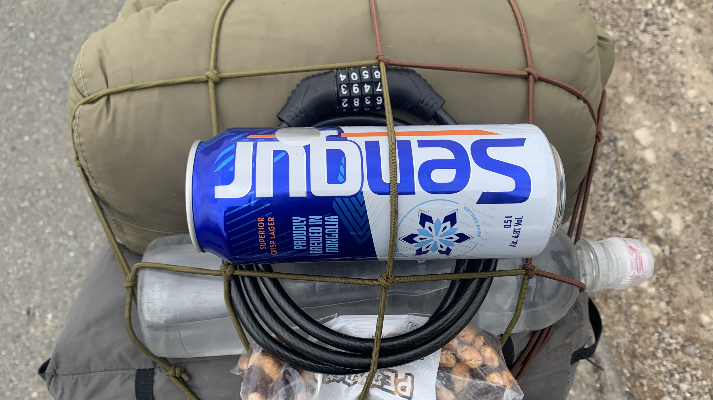
感動地把啤酒插在睡袋上，揮手和他道謝。年輕人笑著回到車上，關門前回頭說了一句：「Fighting!」
憑藉著這句話，我繼續騎往地圖上標記的蒙古包餐廳。抵達後發現木門已經損毀，裡面空有一屋餐飲設備，卻只有幾頭牛在門外徘徊吃草。
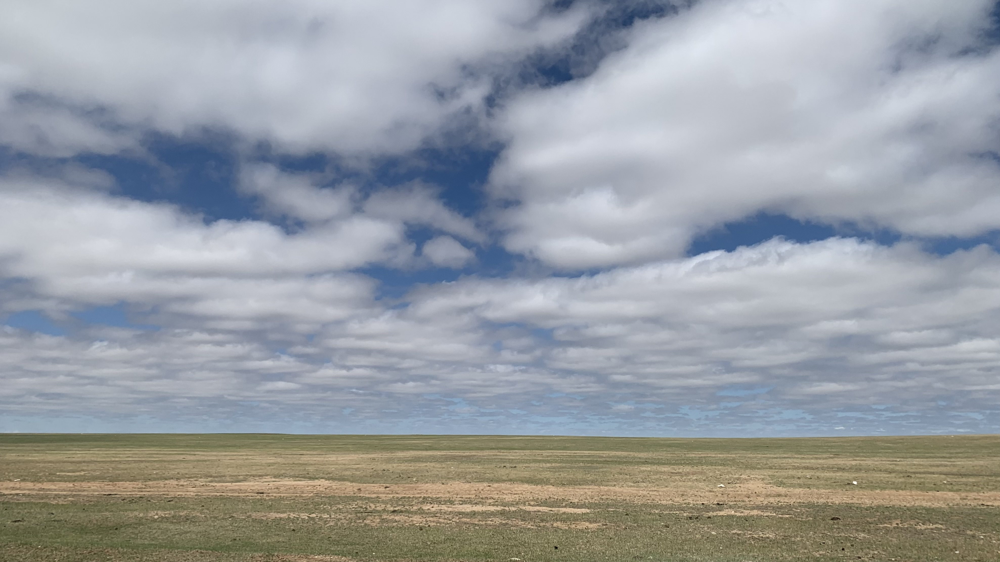
獲得啤酒後路面一樣顛簸，天空則意外地放晴了。
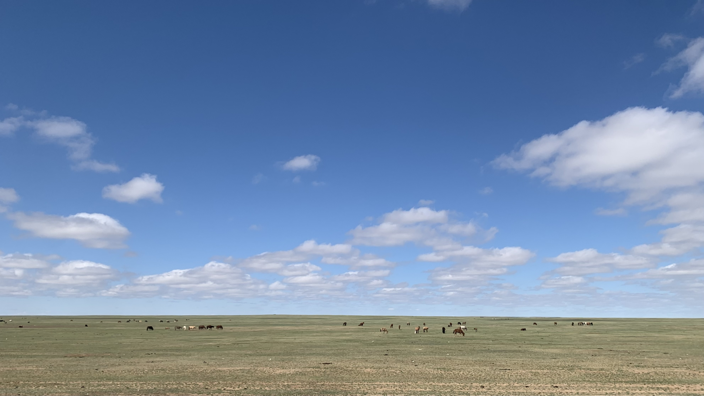
這就是大家說的草原嗎？好和諧的畫面啊！
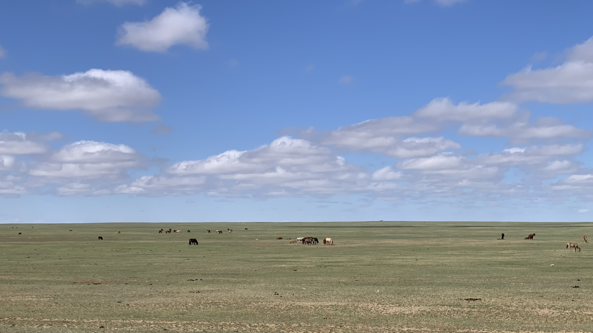
草地上散佈著低頭吃草的馬，有許多小馬貼著大馬行走。
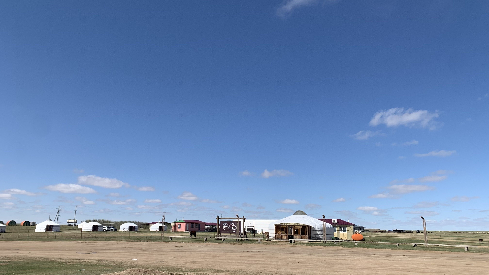
來到蒙古包餐廳，並沒有營業的跡象。
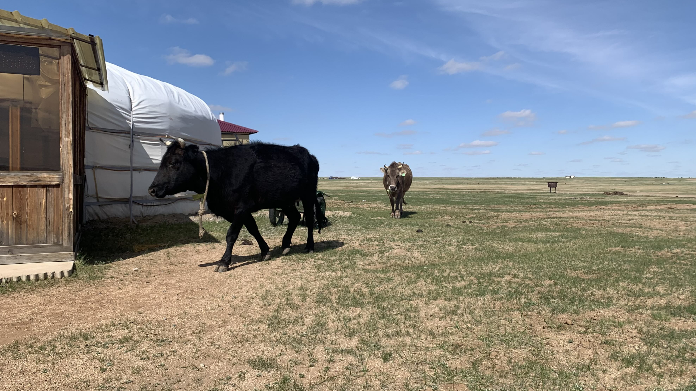
只好拿出自己的乾糧坐在門口看牛吃草。
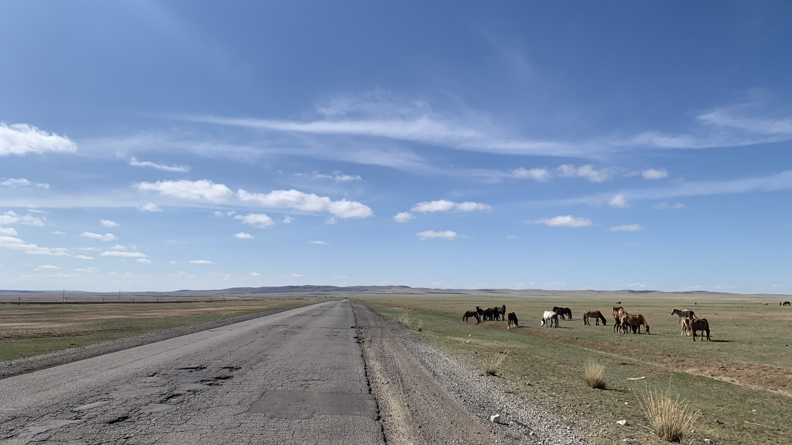
二十三號不斷撞擊路面，開始有點反胃想吐。竟然暈車了嗎？
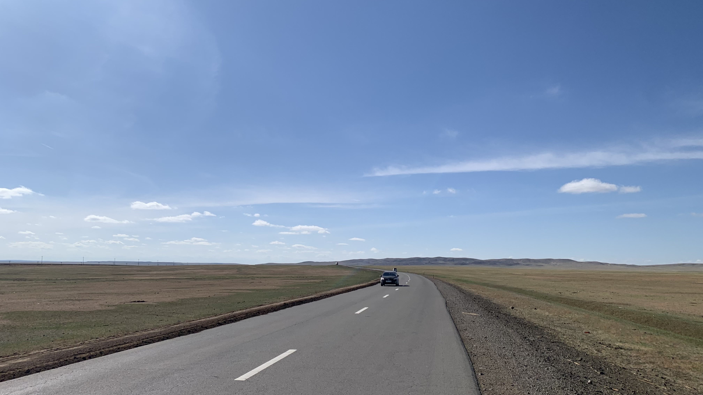
經過長長的模仿汝窯開片的柏油路，已經看不到戈壁乾燥的地表，路邊的草地上出現一塊一塊深色發芽的草。
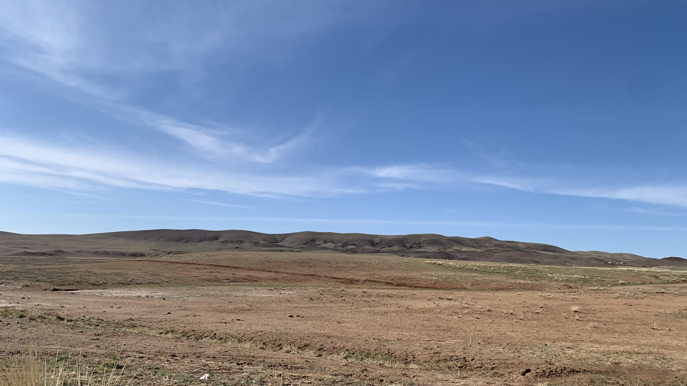
看著生機勃勃的風景應該開心雀躍，但我真的非常想吐。原本休息的涵洞不知為何堆滿了人造垃圾，還有些堆積了被丟棄的動物屍體，路肩的垃圾和碎玻璃也多到無法停車休息，只能不斷往前騎。
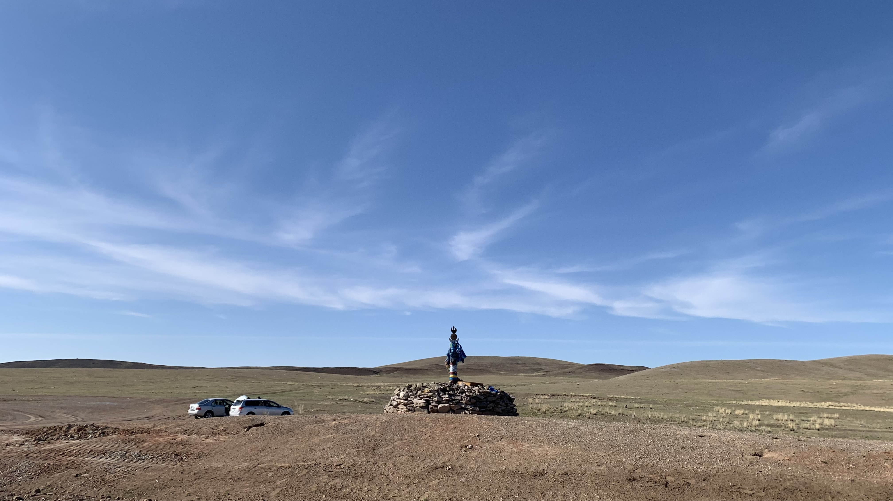
爬上一座山頂，看到地界上插著敖包標誌，代表今日正式離開戈壁省。路況會不會變好呢？
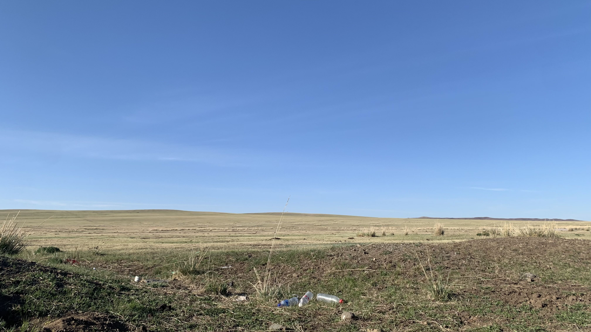
路面依然凹凸不平，找到一處看來沒那麼髒的洞口。趕緊牽車滑下去。跟地面的高低差不足以遮蔽站立的我，因此半蹲著搭好帳篷，鋪好睡袋睡墊，鑽進去後就立馬躺平了。
半夜十二點突然睡醒，睡袋和外帳摸起來相當濕冷。掏出露宿袋包上，將外帳的透氣口撐開。拉開拉鍊看看外面的動靜，來往車輛的遠燈不時照亮地平線上的草。草上依然是整片星空，然而大氣濕潤，似乎少了第一晚的穿透感，隔了一層距離。已經不是戈壁了。
失去睡覺的心情，望著帳篷頂部，回想這幾天看見的眼神，總是想到我以前也有這樣的表情，卻已經記不起什麼時候學會社交式微笑的。
今日花費： 晚餐 31400、咖啡 10000、住宿 80000元